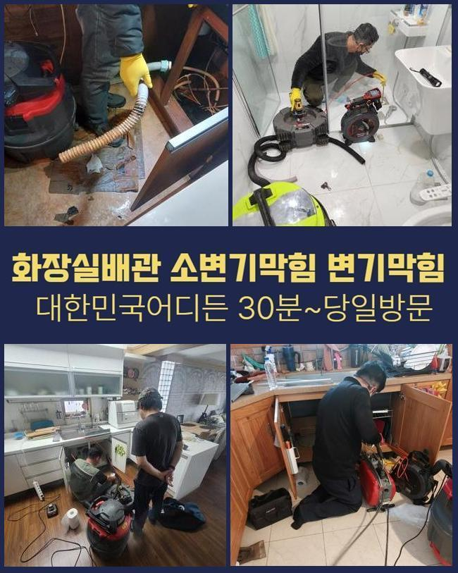
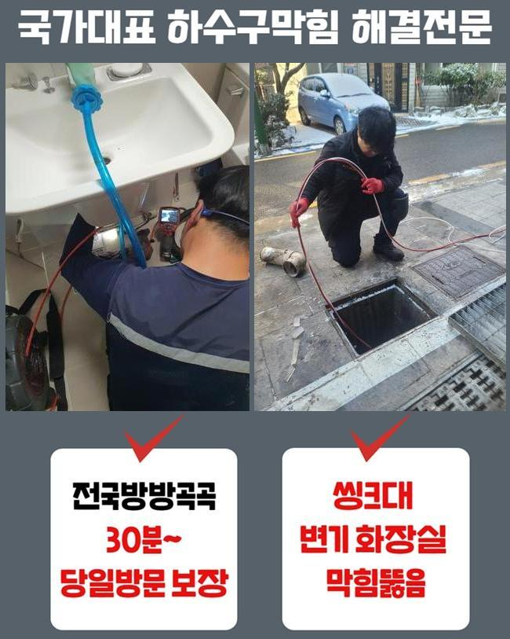
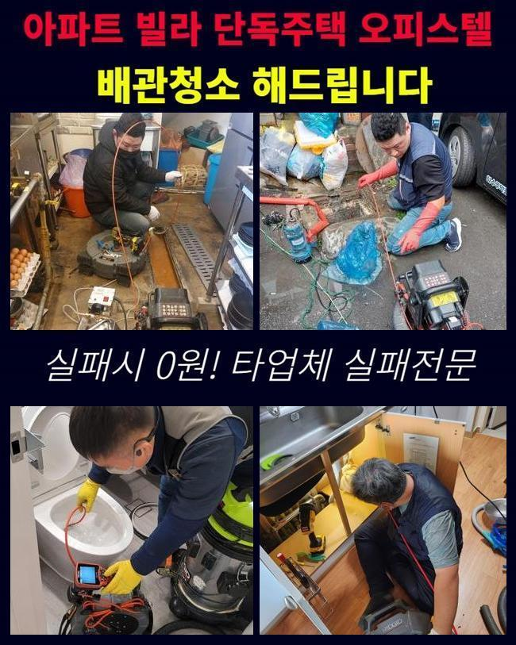
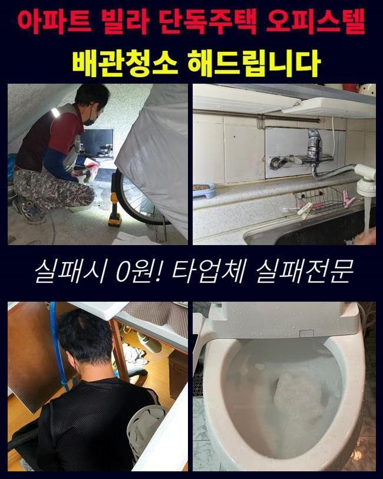
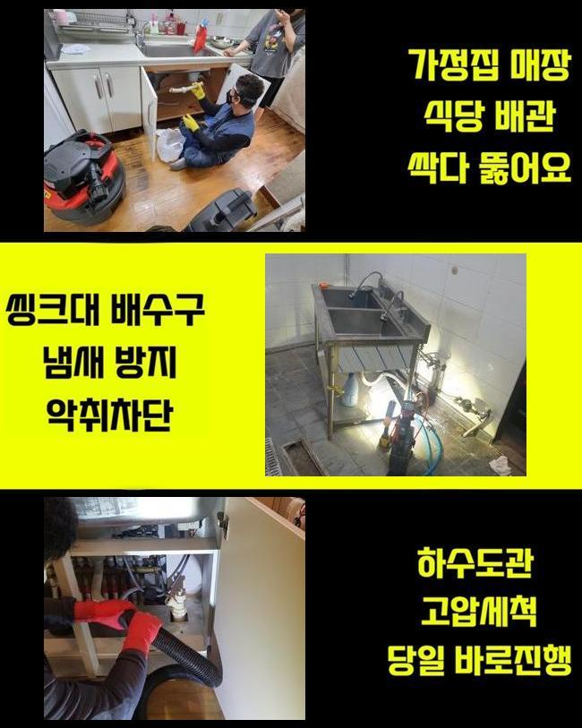
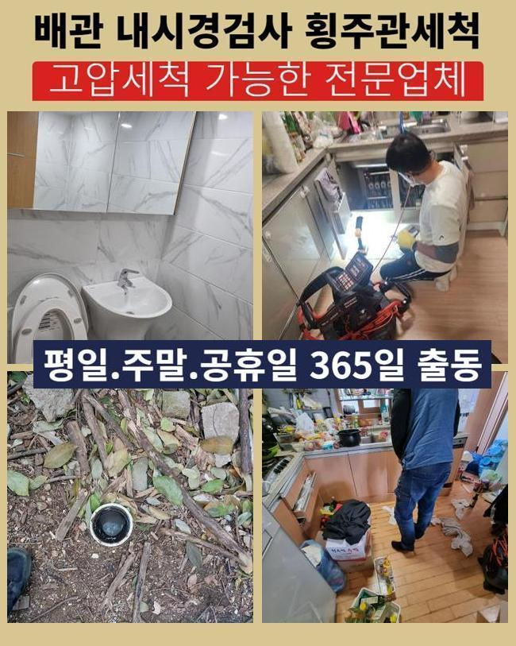

🏠 미산동화장실하수구역류 논곡동 오수맨홀청소 배관뚫는업체
용인 하수구막힘 전문 시공 후기

📋 작업 개요
- 위치: 용인
- 서비스 유형: 하수구막힘, 배관막힘, 맨홀막힘, 집수정막힘, 역류해결, 뚫는업체, 배관청소, 고압세척
- 작업 일시: 2025. 5. 20. 14:31
- 업체명: 하수구수사대 (010-5615-2118)
🔍 문제 상황
미산동화장실하수구역류 논곡동 오수맨홀청소 배관뚫는업체
저희들은 일주일 전 상업시설의 통수오류를 해결할 목적으로 찾아뵙게되었어요
상담을 진행했던 고객의 안내를 그러므로 저희들은 상업시설의 화장실내부에서 계속적인 이물질 역류 통수오류를 해결하고자 내방했습니다
의뢰인은 이것때문에 다양한 불편호소를 계속 받고 계셨어요
해당 증상을 신속하게 대응하고자 저희전문진은 서둘러 도착해 이곳저곳을 관찰했는데요
여지껏 누적되는 잔해물이 배수구를 막아선걸 관찰한 후 조속하게 고쳐냈는데요
앞선 현장으로 판단하건대 해당 고형물은 일반적으로 메인관에서 목격되기에 오늘과 같은 문제들이 야기되지 않았나 생각했죠
그러므로 조속하게 외부쪽으로 이동해서 이상징후가 포착된 배수관의 스팟을 파악하고자 검수들을 실시했죠
탐지장비를 이용하여 배관의 부위를 특정시켰고 개폐구를 여니 이물의 고착률이 심각수준이였어요
수전쪽에 쌓이게된 오염물의 찌꺼기들과 외측에서 흘러온 폐기물들도 엉켜있었죠

🔎 원인 분석
💡 전문가 진단: 정밀 진단 장비를 사용하여 슬러지의 고착 여부를 판명하고 타격/세척 작업을 실시했습니다.
이러한 막힘들을 시정해내고자 빠르게 알맞는 대응을 하게 되었고 상가빌딩의 시설을 장기적으로도 쓸 수 있게 하였습니다
관로에 아직 이물들이 누적될 시 많은 통수오류를 유발시키기에 시정에 대해 조치해주는게 요구됩니다
점검해보니 잔해가 넓은 범위에 분포해있는것을 체크하게되었어요
오염원은 계속해서 축적되면서 돌덩이처럼 딱딱해져 있었죠
여러원인이 중첩되어 배수에 치명상이 생겨났다 생각했어요
그러므로, 다양한 기계를 써서 배수관을 청결하게 만들기로 했습니다
여러기기들로 배수구를 세척해줄때에는 고수압의 세척들이 필요하죠
만일 집수정 등에 잔해가 존재할 경우 전형적인 방법으론 무리일 수 있죠
그러므로, 고압노즐을 운용해 안전하게 기름때들을 싹쓸이하는게 실시되야했습니다
세척을 거치면 하수관을 깔끔히 사용할 수 있고 트러블들이 야기되는 것을 사전에 예방하게 됩니다
그러므로, 배수구를 시공하는 시점에는 고압수청소를 고려하시는것도 합리적인 방법들이 됩니다

🔧 작업 과정
같은 맥락으로 잔해가 누적되지 않을 정도로 주기성을 갖춘 진단해보는게 필요하고 적절히 대응한다면 쉽게 막힘들을 해결할 수 있습니다
이 부분은 염두에 두고 트러블들이 발생했을 때는 안정적인 시공이 요구되고 전문진의 손길로 흐름에 문제없는 통수과정을 수립하는게 이행되어야해요
기술적인 부분도 먼저겠지만 전문적인 솔루션을 통해 배관을 깔끔하게 유지시키는게 실질적인 방법들이 됩니다
청소수행을 제대로 진행시키기 위해선 자리한 모습과 특성들을 알고 있어야 하죠
하수관은 여러개의 소재로 구성되어있고 시간이 흘러 내구성들이 저하되므로 쎈 압력들을 가해주는건 위험이 따릅니다
내식성과 해당 장소의 데이터를 바탕으로 알맞는 방식을 투입시켜주어야 합니다
해당 사항들을 잘 지키면 고압세척들로 완성도 높은 결과물을 얻게됩니다
운용했던 석션기기는 압차를 투입시켜 하수관의 잔여물질들을 효율적으로 제거시켜주었어요
석션기에 빠져나온 오염원의 찌꺼기를 확인하였고 내시경도구를 삽입해 깊숙한 부분까지 살펴보니 아직 이물들이 8할 이상이이라 배수상황에 애를 먹고 있었어요
이 부분은 염두에 두고 타 방법을 실시해 저희의경우 배수로에 발생한 통수오류를 빠르고 안전하게 해결해주고 매립된 형상과 흡착된 정도들을 고려해서 청소하여 알맞는 물의 흐름을 유지하게되었습니다
이러한 증세는 주로 잔해물이 깊은곳에 축적되어 쌓이는 결함으로 배수공간이 협소하여 통수들이 불가한 형상이 우리 앞에 다가옵니다
이러한 상태라면 전문가들의 도움들로 내시경기기를 사용해 심층부까지 검수하고 문제들을 유발하는 원인들을 배출시키는게 실시되야했습니다
고압수청소를 진행시키면서 저희의경우 진입부로 호스들을 투입시켰고 1m 라인에선 기름들이 한꺼번에 빠져나가는것을 목격했어요
허나 기름뭉치가 자리잡은 3미터 포인트에선 이물들의 양상을 보고 수압의 세기들을 조정하여 세척을 실시했습니다
슬러지들의 흡착정도가 심했기에 온수 고수압세척들을 진행시켰는데 안전을 지켜낼 수 있는 요소들을 상기하고 기름들을 처리했죠
막히는 사례는 불현듯 발생해 때론 감당하기 힘든 불편을 발생케해요
배관 장애는 상당수 잔해물이 점차 쌓여 발발하기 때문에 한시라도 빨리 막힘들을 풀어주어야합니다


✅ 작업 완료
고객분의 불편들을 잠재우기위해 빠르게 시정해드리도록 할게요
배수정체를 조사하고 올바른 방법들을 선정해 시정에 돌입합니다
신속한 시공이 우선고려사항이라 문제상태를 등한시해선 안되겠습니다
전문진의 손길이 필요하다라면 시간 상관없이 연락주세요!
결함이 발생하면 조속히 대응하여 안전하며 청결한 배수환경들을 유지시키겠습니다




⚠️ 하수구 배관 막힘 예방 및 관리 가이드
- ✅ 머리카락, 비닐, 물티슈 등 물에 분해되지 않는 이물질은 하수구 유입을 절대 금지해 주세요.
- ✅ 하수구 거름망을 씌우고 모여진 이물질은 주기적으로 쓰레기통에 바로 비워주셔야 합니다.
- ✅ 배관 노후가 심할 경우 이물질이 더 쉽게 걸리므로 주기적인 배관 세척(고압세척 등)을 권장합니다.
- ✅ 작업 후 1년 이내 재발 시 하수구수사대에서 무상 A/S 보증 서비스를 제공합니다.
💡 핵심 정리
- 확실한 장비 작업(내시경 점검 및 샤프트 스케일링)으로 원인을 뿌리 뽑습니다.
- 작업 후 1년 이내에 동일한 부위 재발 시 100% 무상 A/S 서비스를 보장합니다.
- 서울 · 경기 · 인천 전 지역에 24시간 언제든 긴급 출동할 수 있도록 항시 대기 중입니다.
❓ 자주 묻는 질문 (FAQ)
🚨 용인 하수구막힘 문제로 고민이신가요?
정확한 원인 진단과 확실한 시공으로 재발 없는 해결을 약속드립니다.
24시간 긴급 출동 | 서울 · 경기 · 인천 전지역 | 1년 내 재발 시 무상 A/S